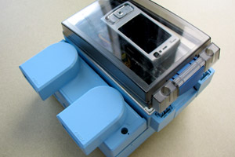
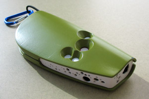

Deployments
Street Sweepers
We are collaborating with the City of San Francisco to put our air quality sensing system on street sweepers in San Francisco. The goal is to leverage mobile infrastructure to collect street-by-street readings throughout the city. To date, the devices have been deployed on approximately a dozen street sweepers and reported GPS, carbon monoxide, ozone, NOx, temperature, and humidity data.
West Oakland Handheld Study
We are about to deploy our handheld device with a community action group in West Oakland, in order to learn more about carbon monoxide, ozone, and NOx pollutants in that area.
West Oakland Backpack Study
Particulate matter is of great interest in West Oakland, but no practical mobile particulate sensor is currently available. We are collaborating with researchers at U.C. Berkeley on the development of a mobile particulate matter sensor. In the meantime, we are eager to try out our visualization and discussion software with particulate matter data, so we are working with a community action group in West Oakland to conduct a “backpack study” with portable commercial particulate matter data loggers that can be carried in backpacks or messenger bags.